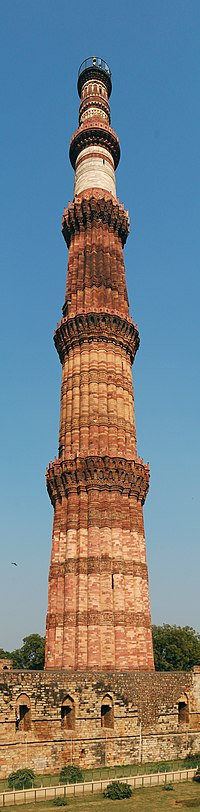
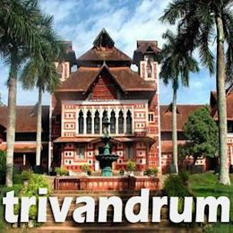

Hampi was the capital of the Vijayanagara Empire in the 14th century.[3]
Located in Karnataka near the modern-era city of Hosapete, Hampi's ruins are spread over 4,100 hectares (16 sq mi) and it has been described by UNESCO as an "austere, grandiose site" of more than 1,600 surviving remains of the last great Hindu kingdom in South India that includes "forts, riverside features, royal and sacred complexes, temples, shrines, pillared halls, mandapas, memorial structures, water structures and others"
The Vitthala temple has a Garuda shrine in the form of a stone chariot in the courtyard; it is an often-pictured symbol of Hampi. Above the chariot is a tower, which was removed during 1940s, as per historian Dr.S.Shettar.[84] In the front of the stone chariot is a large, square, open-pillared, axial sabha mandapa, or community hall.[83] The mandapa has four sections, two of which are aligned with the temple sanctum.
The mandapa links to an enclosed pradakshina patha for walking around the sanctum.
continue
Qutub Minar
This is the main
Qutub Minar or Qutb Minar, a 73 m (240 ft.) high tower made of red sandstone and marble is not only the highest brick minaret in the world but also one of the most famous historical landmarks of India. The construction of this tower of victory was started by the founder of the Mamluk Dynasty in Delhi, Qutb ud-Din Aibak and completed by his successor and son-in-law Iltutmish. Located in the heart of Delhi, India, this UNESCO World Heritage Site, visible from different parts
History of this Colossal Tower
Qutb ud-Din Aibak, the founder of the Turkish rule in north-western India and also of the Mamluk Dynasty in Delhi commissioned the construction of this monument in 1192 AD. Aibak dedicated the minaret to the Muslim Sufi mystic, saint and scholar of the Chishti Order,

A number of monuments and buildings that are historically significant and associated with the minaret surround it and the whole area forms part of the Qutb complex. The structures inside the complex include the Quwwat-ul-Islam Mosque, the Iron Pillar of Delhi, the Tomb of Imam Zamin, the Tomb of Iltutmish and Major Smith's Cupola among others.
Of these the Quwwat-ul-Islam Mosque located at the north-east foot of the minaret holds significance as the first mosque that was constructed in India.Another notable attraction inside the Qutb complex is the 7 m (23 ft.) Iron Pillar, a rust-resistant iron column that not only attracts tourists but also draws attention of archaeologists .
Thiruvananthapuramcontinue
Thiruvananthapuram
This is the main
The Chera dynasty governed the area of Malabar Coast between Alappuzha in the south to Kasaragod in the north. This included Palakkad Gap, Coimbatore, Salem, and Kolli Hills.
Tth of king Vikramaditya Varaguna in 925 AD, the glory of the Ays departed and almost all their territories became part of the Chera dynasty.[39][14] During the tenth century, the Cholas attacked and sacked Vizhinjam and surrounding regions.[14] The port in Vizhinjam and the historic education center of Kanthalloor Sala were also destroyed

The early rulers of the city were the Ays. Vizhinjam, which is now a region in the present-day Thiruvananthapuram, was the capital of the Ay dynasty.[34] Vizhinjam was an important port city from as early as the second century BC.[35][36] During the Ay dynasty's rule, Thiruvananthapuram witnessed many battles in which the Chola and Pandyan dynasties .
different places in thiruvanantapuram
 The Vitthala temple has a Garuda shrine in the form of a stone chariot in the courtyard; it is an often-pictured symbol of Hampi. Above the chariot is a tower, which was removed during 1940s, as per historian Dr.S.Shettar.[84] In the front of the stone chariot is a large, square, open-pillared, axial sabha mandapa, or community hall.[83] The mandapa has four sections, two of which are aligned with the temple sanctum.
The mandapa links to an enclosed pradakshina patha for walking around the sanctum.
The Vitthala temple has a Garuda shrine in the form of a stone chariot in the courtyard; it is an often-pictured symbol of Hampi. Above the chariot is a tower, which was removed during 1940s, as per historian Dr.S.Shettar.[84] In the front of the stone chariot is a large, square, open-pillared, axial sabha mandapa, or community hall.[83] The mandapa has four sections, two of which are aligned with the temple sanctum.
The mandapa links to an enclosed pradakshina patha for walking around the sanctum.